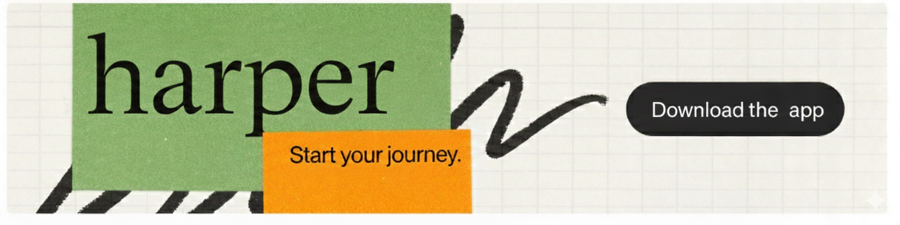

Human verification, simplified.
Protect your app from bots. Respect your users.
Get Started DeployFeatures
- Simple. Image-based challenge. Natural for humans, hard for bots.
- Accessible. Text-based verification. Works across languages.
- Private. No tracking. No data collection.
- Fast. Drop-in Flask middleware.
- AI-Powered. Uses Google Gemini for image generation.
How does verification work?
Users are shown a human avatar image and asked to describe what they see by typing a word. Accepted answers include "human", "person", "avatar", "box", and similar terms. This text-based approach is accessible and works across languages.
How secure is it?
The verification uses a static image with multiple accepted keywords, making it resistant to simple bots while remaining accessible. Each session is tracked server-side to prevent rapid retry attacks.
How do I integrate it?
Install the package, set your GEMINI_API_KEY, and add the middleware to your Flask app. It's a drop-in solution with no database required.

Setup
git clone https://github.com/bniladridas/path.git
cd path
pip install -r requirements.txt
export GEMINI_API_KEY=your-key
python run.pyAPI
GET /— Main interfaceGET /verify— Verification challengePOST /verify— Submit answerPOST /search— Gemini-powered search